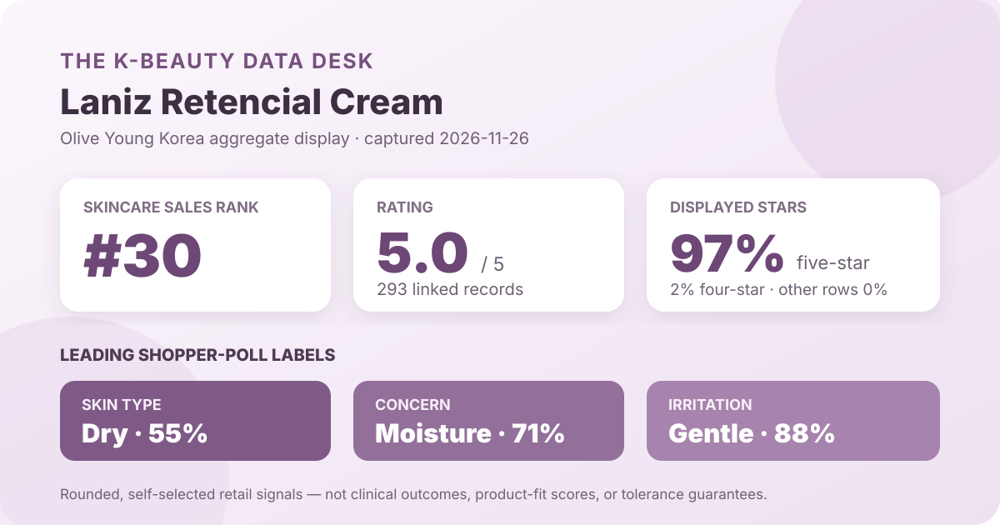
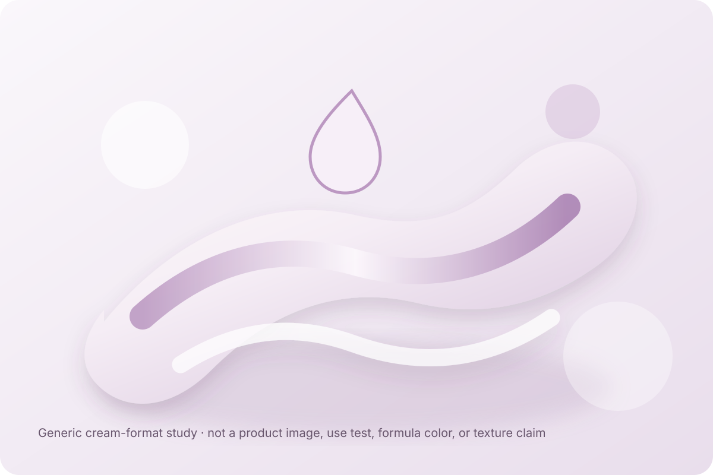

Data captured November 26, 2026. Olive Young Korea displayed “라니쥬 리텐셜 크림 80ml.” This article uses “Laniz Retencial Cream” as a readable romanized label; the retailer page did not provide an English brand rendering in the captured heading. The analysis uses only the live ranking, product identity, aggregate rating, displayed star shares, and shopper polls. It does not copy or translate individual reviews, names, profiles, or photographs, and it makes no claim of firsthand use.

The short version: Laniz Retencial Cream appeared at number 30 in the captured skincare sales ranking. The ranking and detail titles agreed, while the product header and official review detail both showed 5.0 out of 5 from 293 records. Five-star ratings represented 97% of the displayed distribution. Dry skin led the skin-type poll at 55%, moisture led the concern panel at 71%, and gentle led the irritation panel at 88%. These are favorable storefront signals, not proof of hydration, barrier repair, ingredient performance, clinical effect, or suitability for a particular person.
The official display showed 5.0 stars from 293 review records. That is more informative than a single-digit launch sample, yet it remains modest beside mature listings with thousands or tens of thousands of records. The useful conclusion is limited: the captured group produced a very favorable rounded rating, and the detailed distribution was heavily concentrated in the five-star row.
Retail feedback is observational. It can combine impressions of formula, packaging, price, promotional gifts, delivery, expectations, and the reasons people chose to leave feedback. The interface did not expose a verified-buyer denominator, raw star counts, a controlled comparison, or a method for separating comments about the cream from comments about the transaction.
The listing was an 80 ml cream and displayed a same-size “light” version as a promotional gift during capture. That context may shape value perceptions and does not necessarily persist. The 293 linked records may also span related configurations in the product family. None of this supports a claim that the cream changes a clinical endpoint or outperforms another moisturizer.
The official rows showed 97% five-star, 2% four-star, and 0% each for three-, two-, and one-star. The displayed rows total 99%, not 100%, which indicates rounded percentages rather than a set of raw counts. The distribution is directionally consistent with a 5.0 rounded average.
A displayed zero does not prove there were no ratings in that row; a small underlying share may round down. The average and star bars also do not say why people rated as they did, how long they used the cream, how much they applied, what else was in their routines, or whether expectations were influenced by a launch or gift campaign.
The skin-type panel displayed 55% dry, 39% combination, and 5% oily. These rounded rows total 99%. Dry was the largest label, with combination also substantially represented and oily forming a much smaller share.
This is sample representation, not a fit score. A shopper selecting dry skin does not establish that the product corrected dryness, and a smaller oily-skin share does not show poor suitability. The platform did not disclose the poll denominator, response timing, or outcomes within each skin-type group. The data therefore cannot tell a reader whether the cream will feel heavy, light, occlusive, greasy, comfortable, or compatible with acne-prone skin.
The concern panel showed 71% moisture, 23% soothing, and 5% wrinkle or brightening. The rounded rows again total 99%. Moisture was clearly the leading label, but this panel records a shopper-selected impression. It is not a corneometer reading, barrier-function study, transepidermal-water-loss test, redness assessment, wrinkle measurement, or pigmentation endpoint.
The 71% share does not mean the cream increased hydration by 71%. The 23% soothing share is not a response rate for reduced irritation or inflammation. Without a baseline, comparator, application schedule, follow-up period, and disclosed denominator, the panel cannot support a clinical or medical claim.
The irritation panel displayed 88% gentle, 10% ordinary, and 1% felt irritation. The rows total 99% after rounding. The leading response is favorable, but the smaller rows still matter: aggregate sentiment cannot promise a uniform experience.
A retailer poll cannot predict allergy, stinging, breakouts, sensitivity to the current formula, or interactions with retinoids, exfoliants, acne treatments, sunscreen, and makeup. It does not show whether respondents patch-tested or whether they applied the same amount under comparable conditions. A person with a known skin condition or prior reaction should not treat the 88% label as a safety clearance.
The official review view exposed the rating, count, star shares, and three shopper-poll panels. During capture, it did not expose a stable retailer-generated anonymous theme summary suitable for reporting. This analysis therefore does not infer recurring topics from the visible feed.
That limit is intentional. A handful of on-screen comments cannot represent all 293 records, and copying or translating individual review text would add personal or copyrighted material without improving the aggregate evidence. The article stops at the statistics the interface clearly displayed.

The retailer identifies the item as a cream. In general skincare language, a cream is a leave-on emulsion often used after lighter steps, but that category does not define thickness, spread, slip, tack, absorption speed, finish, scent, occlusiveness, or behavior under sunscreen and makeup.
I did not open, dispense, spread, layer, or wear this product. The local visual uses abstract folds only to indicate a generic cream format. It does not reproduce the product, packaging, color, or a real swatch, and it should not be read as evidence of sensory performance.
The captured title included promotional references to EGF and barrier care. Those words identify the listing but do not establish ingredient identity, source, concentration, stability, delivery, penetration, or a measured change in barrier function. This analysis did not independently audit the formula and does not infer a dose or mechanism from the product name.
Readers who need ingredient, allergen, fragrance, or regional-formula details should consult the current package and official disclosure. Formulas and labels can change independently of accumulated review records, and a Korean promotional listing may not match every regional configuration.
Rank 30 describes one capture of Olive Young Korea's skincare sales list. It is not a clinical ranking or a claim that this is the thirtieth-best cream. Advertising, inventory, launch timing, discounts, gifts, seasonality, and short-term demand can move a listing quickly.
The captured page showed an 80 ml cream, a ₩36,900 reference price, a ₩28,900 promotional price, and a same-size light cream gift while supplies lasted. Those details can change separately from the review aggregates. Verify the current seller, formula, volume, gift, stock, expiry information, directions, return terms, and checkout price on the live page.
The product header and detailed review view both displayed 5.0 out of 5 from 293 linked review records. Displayed star shares were 97% five-star, 2% four-star, and 0% in the other three rows.
Dry skin led at 55%, followed by combination at 39% and oily at 5%. These rounded shares describe the displayed response sample and do not prove suitability.
No. It is a rounded shopper-poll label, not an instrument measurement, controlled comparison, barrier-function test, or percentage increase in hydration.
No. The aggregate cannot predict allergy, irritation, sensitivity, routine interactions, or any individual's response.
No. This article analyzes retailer-displayed aggregates only and uses brand-neutral vector artwork rather than a product photograph or tested swatch.
Laniz Retencial Cream was the first distinct unpublished product after 29 covered ranking positions. The captured listing was internally consistent: rank 30, matching identity, 5.0 stars from 293 records, 97% five-star, dry skin leading at 55%, moisture leading at 71%, and gentle leading at 88%.
The signal is favorable but narrow. It supports describing current retail satisfaction and poll representation, not claiming barrier repair, hydration performance, ingredient efficacy, clinical benefit, or universal tolerance. The most useful next step is to verify the current formula and offer, then decide whether this cream fills a real gap in a routine that already works.
Source: Olive Young Korea product listing and official aggregate review statistics, captured November 26, 2026. Open the source product page.
← All reviews · Review-volume rankings · Skin-poll explorer · Methodology